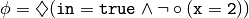
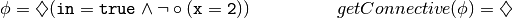
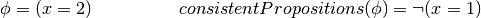
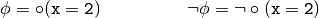
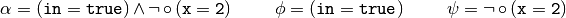
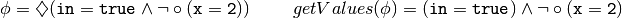
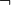
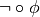

Formula¶
This module contains the class to describe a temporal formula.
- class formula.Formula(data)¶
This class represents a temporal formula.
Parameters: data (Dictionary.) – Structure representing the temporal formula. Example : 
>>> from formula import * >>> phi = Formula({"<>": {"^":{"":"in=true","~":{"o":"x=2"}}}})
Note
Logic operators are represented by the following symbols:
- Globally : []
- Future : <>
- Next : o
- Negation : ~
- Or : v
- And : ^
- getConnective()¶
Return the main connective of the formula.
Returns: A string representing the main connective of the formula. Return type: String. Example : 
>>> from formula import * >>> phi = Formula({"<>": {"^":{"":"in=true","~":{"o":"x=2"}}}}) >>> phi.getConnective() '<>'
- getConsistentPropositions()¶
Returns the consistent propositions of a formula.
Returns: A structure representing the consistent proposition of the formula. Return type: Dictionary. Example : 
>>> from formula import * >>> phi = Formula({"": "x=2"}) >>> phi.getConsistentPropositions() {'~': 'x=1'}
- getFormula()¶
Returns the formula.
Returns: A structure representing the formula. Return type: Dictionary. Example : >>> from formula import * >>> phi = Formula({"<>": {"^":{"":"in=true","~":{"o":"x=2"}}}}) >>> phi.getFormula() {'<>': {'^': {'': 'in=true', '~': {'o': 'x=2'}}}}
- getNegation()¶
Returns the negation of the formula.
Returns: The negation of the formula. Return type: Formula. Example : 
>>> from formula import * >>> phi = Formula({"o":"x=2"}) >>> negPhi = phi.getNegation() >>> negPhi.getFormula() {'~': {'o': 'x=2'}}
- getPropositionRules()¶
Returns the consistent propositions of all propositions in the implementation.
Example : Returns: A dictionary containing as key a proposition, and value all possible propositions that are consistent. Return type: Dictionary. >>> from formula import * >>> phi = Formula({"<>": {"^":{"":"in=true","~":{"o":"x=2"}}}}) >>> phi.getPropositionRules() {'x=1': {'~': 'x=2'}, 'x=2': {'~': 'x=1'}}
- getSubFormulas()¶
Returns the subformulas attached to a binary operator.
Returns: A list containing the subformulas. Return type: List. Example : 
>>> from formula import * >>> alpha = Formula({"^":{"":"in=true","~":{"o":"x=2"}}}) >>> subformulas = alpha.getSubFormulas() >>> for subformula in subformulas: ... print subformula.getFormula() {'': 'in=true'} {'~': {'o': 'x=2'}}
- getValues()¶
Returns the formula without the outermost unary operator.
Returns: A structure representing the formula without the outermost unary operator. Return type: Dictionary Example : 
>>> from formula import * >>> phi = Formula({"<>": {"^":{"":"in=true","~":{"o":"x=2"}}}}) >>> phi.getValues() {'^': {'': 'in=true', '~': {'o': 'x=2'}}}
- isBasic()¶
Checks if the formula is a basic formula (i.e. proposition or it has
 as main connective)
as main connective)Returns: True if the formula is a basic formula or False otherwise. Return type: Boolean. Example : >>> from formula import * >>> phi = Formula({"o":"x=2"}) >>> phi.isBasic() True
- isNegativeFormula()¶
Returns if the formula has  as main connective.
Returns: True if the formula has as main connective or False otherwise. Return type: Boolean. Example : >>> from formula import * >>> phi = Formula({"~":{"o":"x=2"}}) >>> phi.isNegativeFormula() True
- isNegativeNext()¶
Checks if the formula is of the form .
Returns: True if the formula is of the form or False otherwise. Return type: Boolean. Example : >>> from formula import * >>> phi = Formula({"~": {"o":"x=2"}}) >>> phi.isNegativeNext() True
- isProposition()¶
Checks if the formula is a proposition.
Returns: True if the formula is a proposition or False otherwise. Return type: Boolean. Example : >>> from formula import * >>> phi = Formula({"":"x=2"}) >>> phi.isProposition() True